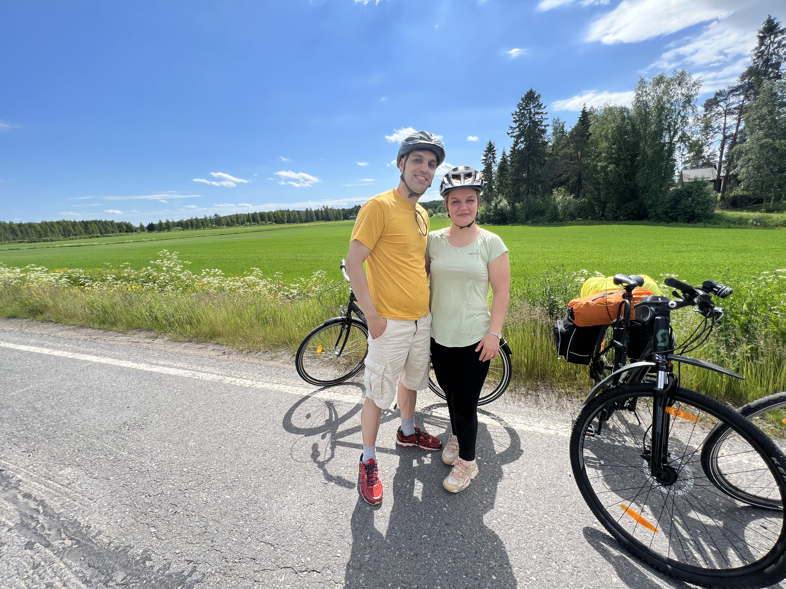
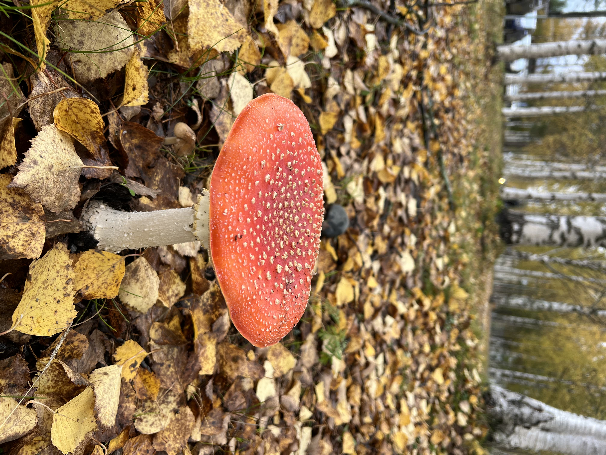
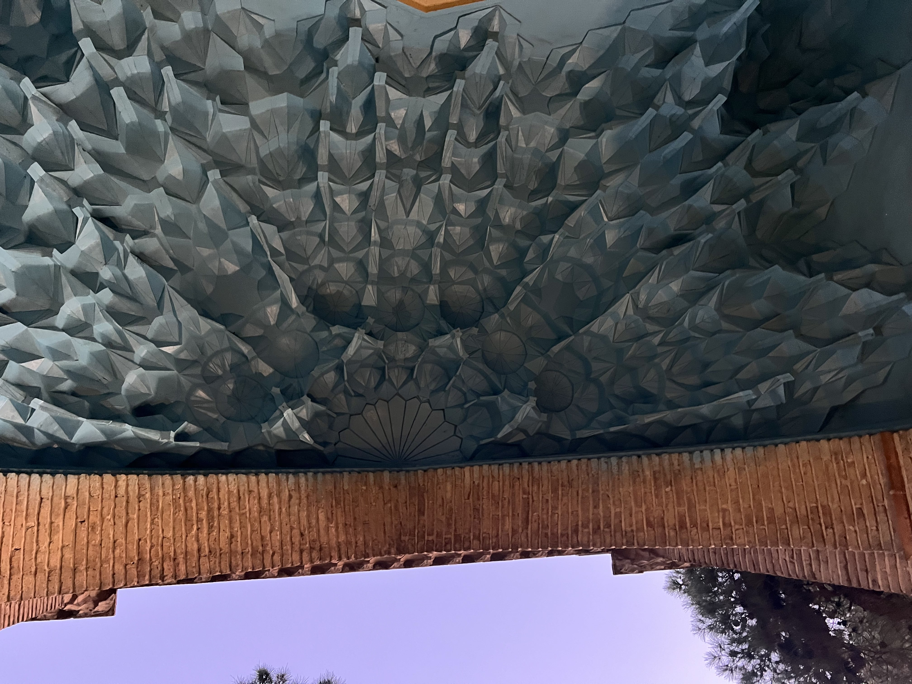
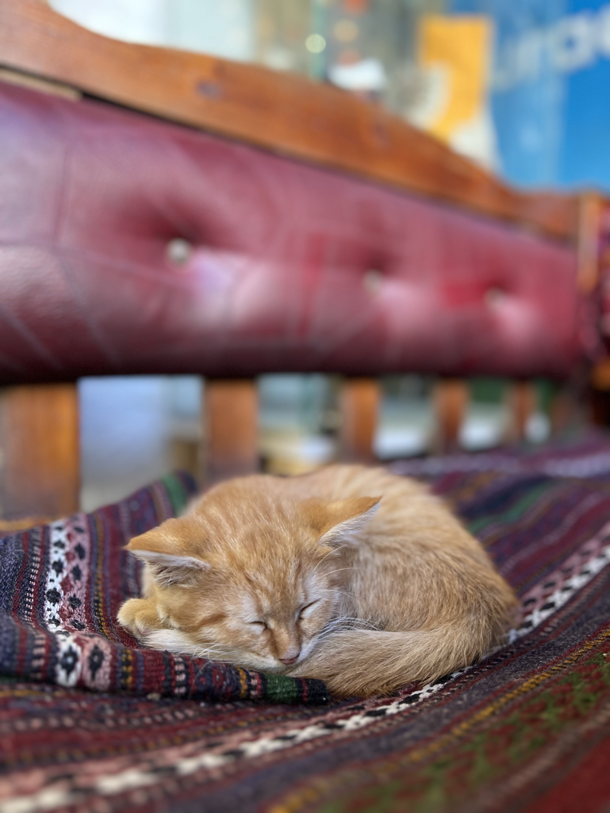
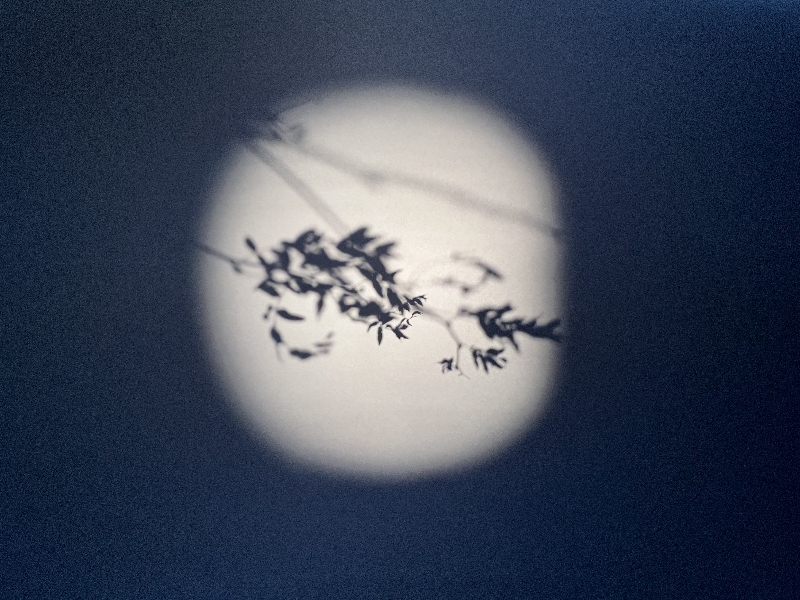
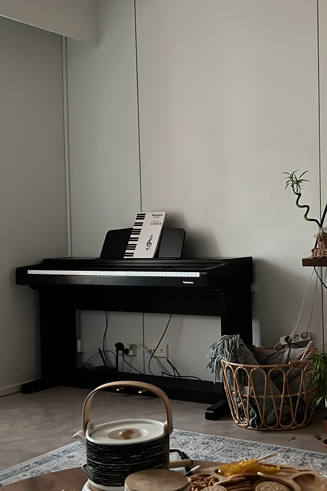

Bike riding
When I'm not coding, I enjoy riding my bike. It's a great way to get some exercise and fresh air. I love exploring new trails and seeing the beautiful scenery around Oulu.
Cooking
I enjoy cooking, especially when I can create a new recipe and the result is out of my expectations. for instance, take a look at my protein pancake, isn't it mouth-watering?

Photography
Photography is another hobby of mine. I love capturing moments and creating beautiful images. Well, I am not that professional photographer, I just love to capture the moments I enjoy the most. Here are some photos I've taken.
   Playing the piano
Playing the piano is another hobby of mine. I bought my own piano last year and I find it very relaxing. I enjoy playing classical music and learning new pieces. Here's a photo of my piano.
